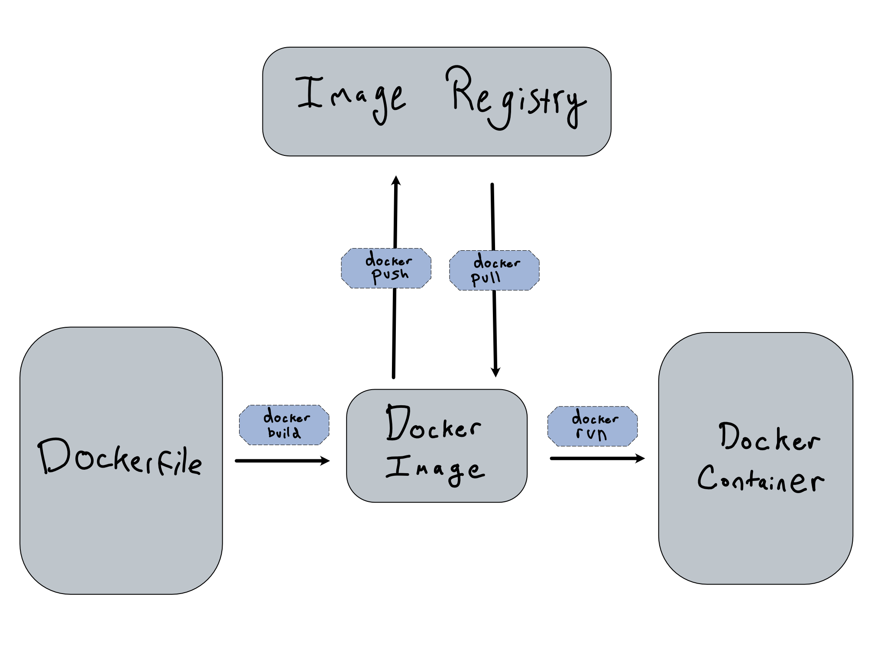
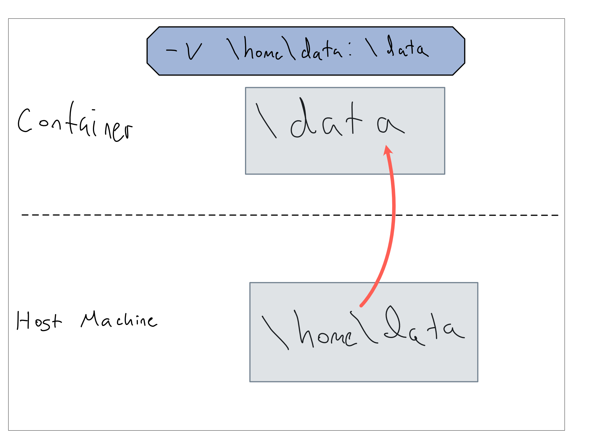

9 Demystifying Docker
Docker is an incredible tool for reproducing a finished analysis somewhere else or sometime else, especially in concert with creating R and Python environments as code like we discussed in Chapter 1. In a data science context, my recommendation is to treat Docker as a tool for enhancing reproducibility by putting finished analyses into a Docker container for deployment or archiving.
Before you start, make sure to install Docker Desktop on your laptop.
This chapter is designed to give you an introduction to how to use Docker containers other people have created and how to create your own.
9.1 Container Lifecycle
Let’s spend just a minute digging into the the lifecycle of a Docker container.
This image explains the different states a Docker container can be in, and the commands you’ll need to move them around.
TODO: change Docker Container to Docker Container Instance, add 3 vertical stages: build, move, run

The most pure distillation of a Docker Container is the Docker Image. An image is an immutable snapshot of a container, suspended in time. It is totally possible to have multiple similar images, but images are immutable by definition. Any changes would make it a different image.
The most common place to store images is in a Docker Registry, but they can also be moved around like regular files.
Docker Registries are quite similar to git repositories. Some organizations run their own registries, most often using offerings from cloud providers.1 The Docker company also runs Docker Hub, which allows public hosting and private hosting of images in free and paid tiers.
Images have names that consist of an id and a tag. If you’re using the public Docker Hub registry, container ids take the form <user>/<name>, so my penguin model container is alexkgold/penguin-model.
Tags are used to specify versions – sometimes of the container itself, but also sometimes of the software it contains. If you don’t specify a tag, it defaults to latest. For example, the rocker/r-ver container, which is a container pre-built with a version of R in it uses tags for the version of R.
Before the Docker Image exists, it has to get built somehow. It is possible, but not recommended, to interactively build a Docker Container. Instead, containers are usually built from a Dockerfile. Dockerfiles are just code, so they’re often stored in a git repository and it’s common to build and store them with CI/CD.
A Docker Container Instance is the Docker Container running somewhere at a given point in time. It’s the thing you’ll actually interact with as a running service.
I’ve included docker pull on the graphic for completeness, but you’ll almost never run it. docker run auto-pulls the container(s) it needs.
You can control Docker Containers from the Docker Desktop app. But if you’re going to be using Docker on a server, you’ll mostly be interacting via the CLI. There’s a cheatsheet for Docker CLI commands at the end of this chapter.
9.1.1 Flags for docker run
You run a container by using the docker run command on the command line.
At its most basic, docker run <image name> will give you a running container. However, Docker commands usually use a lot of command line flags – so many that it’s easy to miss what the command actually is.
One of the things to consider about running a Docker container is how restricted its access is. By default, the container can’t access anything from the host where it’s running. This is a great security feature, but if you want to make data or code available from your host inside the container – or you want to run the container to host an app or API, you’ll need to include those permissions in your docker run command.
One of the important things to include in your mental model is that the container has its own networking and file system. For example, the -v flag makes a volume (directory) from outside the container available inside.
So let’s say you’ve got some data in your ~/Documents/my-project/data directory. You might just want to make it available to the container at /data or /mnt/data. That’s easy to do with the -v command: -v ~/Documents/my-project/data:/data.
TODO: slashes are wrong.

9.2 Building from Dockerfiles
A Dockerfile is a set of instructions that you use to build a Docker Image. Dockerfiles have a particular syntax, but it’s quite readable and if you know how to accomplish something on a running machine, you shouldn’t have too much trouble building a Dockerfile to do the same.
The basic notion to have in mind is building up layers – each one being a usable container.
Your first layer is always the container you’re starting from – sometimes a barebones operating system-only container like ubuntu:latest and sometimes a much richer starting point like rocker/shiny or python/3.10.
Then you’ll take action on top of that layer, installing some software, copying in files or directories, or telling the container what to do when it starts.
One of the nicest conveniences of building Docker Containers is that Docker understands your container’s layers and will only rebuild changed layers and subsequent ones.
For example, let’s say you have a Dockerfile with 3 layers – a starting container, copy in some files, and setting the run time command. If you change the run time command in your Dockerfile and rebuild, the build process will start from the container after everything’s been copied in. This drastically speeds up the container development process.
As you design your Dockerfile, you’ll have to think about what should get put into the container at build time. Your container gets frozen in time during the build, so that’s when you want to put everything the container needs into the container. Moreover, the building script has pretty much free-regin over your system, so that’s when you’ll do things like setting up the versions of R and Python, copying in your project code, and installing system requirements.
9.2.1 Dockerfile Commands
The Dockerfile documentation provides many different commands you can use during build, but here are the handful that are enough to build most images you might need.
FROM– specify the base image.RUN– run any command as if you were sitting at the command line inside the container. Just remember, if you’re starting from a very basic container, you may need to make a command available before you can run it (likewgetin my container below).COPY– copy a file from the host filesystem into the container.CMD- Specifies what command to run on the container’s shell when it runs. This would be the same command you’d use to run your data science project from the command line.2
Once you’ve created your Dockerfile, you build it into an image using docker build -t <image name> <build directory>. If you don’t provide a tag, the default tag is latest.
You can then push that to DockerHub or another registry using docker push <image name>.
9.3 Comprehension Questions
- What does using a Docker container for a data science project make easier? What does it make harder?
- Draw a mental map of the relationship between the following: Dockerfile, Docker Image, Docker Registry, Docker Container
- When would you want to use each of the following flags for
docker run? When wouldn’t you?-p,--name,-d,--rm,-v
- What are the most important Dockerfile commands?
9.4 Lab: Putting an API in a Container
Let’s put our Penguin model prediction API from Chapter 2 into a container.
Again, Vetiver has some nice tooling to make this very easy to do. You should follow the instructions on the {vetiver} website for how to generate your Dockerfile.
One thing to note about this container – it follows best practices for how to put data (in this case the machine-learning model) into the container. That means the model isn’t built into the container. Instead, the container knows how to fetch the model.
I’m using this code to generate my Dockerfile
from pins import board_folder
from vetiver import prepare_docker
board = board_folder("/data/model", allow_pickle_read=True)
prepare_docker(board, "penguin_model", "docker")Once you’ve generated your Dockerfile, take a look at it. Here’s the one for my model:
Dockerfile
# # Generated by the vetiver package; edit with care
# start with python base image
FROM python:3.9
# create directory in container for vetiver files
WORKDIR /vetiver
# copy and install requirements
COPY vetiver_requirements.txt /vetiver/requirements.txt
#
RUN pip install --no-cache-dir --upgrade -r /vetiver/requirements.txt
# copy app file
COPY app.py /vetiver/app/app.py
# expose port
EXPOSE 8080
# run vetiver API
CMD ["uvicorn", "app.app:api", "--host", "0.0.0.0", "--port", "8080"]This auto-generated Dockerfile is very nicely commented, so its easy to follow.
Now build the container using docker build -t penguin-model ..
Ok, now let’s run the container using
If you go to http://localhost:8080 you’ll find that…it doesn’t work? Why? If you run the container attached (remove the -d from the run command) you’ll get some feedback that might be helpful.
In line 15 of the Dockerfile, we copied the app.py in to the container. Let’s take a look at that file to see if we can find any hints.
app.py
Look at that (very long) line 6. The API is connecting to a local directory to pull the model. Is your spidey sense tingling? Something about container filesystem vs host filesystem?
That’s right – we put our model at /data/model on our host machine. But the API inside the container is looking for /data/model inside the container, which doesn’t exist!
This is a case where we need to mount a volume into the container like so
docker run --rm -d \
-p 8080:8080 \
--name penguin-model \
-v /data/model:/data/model \
penguin-model-localAnd NOW you should be able to get your model up in no time.
It’s worth noting that it’s somewhat rare that you want to put the volume at the same location inside the container as it is outside. But because of the {vetiver} tooling, it expects it to be at the same place.
Now, thinking back to Chapter 3, we’re going to run into some trouble when when and if we move the API off of our laptop and onto a server. We’ll address that in Chapter 10.
9.4.1 Lab Extension
Right now, logs from the API just stay inside the app. But that means that the logs go away when the container does. That’s obviously bad if the container dies because something goes wrong. How might you make sure that the container’s logs get written somewhere more permanent?
9.5 Cheatsheet: Docker
9.5.1 Docker CLI Commands
| Stage | Command | What it does | Notes and helpful options |
|---|---|---|---|
| Build | docker build <directory> |
Builds a directory containing a Dockerfile into an image. | -t <name:tag> provide a name to the container. tag is optional, defaults to latest. |
| Move | docker push <image> |
Push a container to a registry. | |
| Run | docker run <image> |
Run a container. | See section below. |
| Run | docker stop <container> |
Stop a running container. | docker kill can be used if stop fails. |
| Run | docker ps |
List containers. | Useful to get running container id to do things to it. |
| Run | docker exec <container> <command> |
Run a command inside a running container. | Basically always used to open a shell in a container with docker exec -it <container> /bin/bash |
| Run | docker logs <container> |
9.5.2 Flags for docker run
| Flag | Effect | Notes |
|---|---|---|
--name <name> |
Give a name to the running container. | Optional. Will be auto-assigned if not provided. Then you’ll need to discover name with docker ps. |
--rm |
Remove container when its stopped. | Very useful when playing around because it cleans things up. Almost never used in prod, because you usually want to be able to inspect logs from old containers. |
-d |
Detach container (don’t block the terminal). | Almost always used in production. Sometimes useful to stay attached when troubleshooting. |
-p <port>:<port> |
Publish port from inside container to outside. | Needed if you want to access anything inside the container with HTTP. |
-v <dir>:<dir> |
Mount volume into the container. | Make a directory (volume) on the host available to the container for reading and writing. |
9.5.3 Dockerfile Commands
These are the commands that go in a Dockerfile when you’re building it.
| Command | Purpose | Example |
|---|---|---|
FROM |
Indicate base container | FROM rocker/r-ver:4.1.0 |
RUN |
Run a command when building | RUN apt-get update |
COPY |
Copy from build directory into the container | COPY . /app/ |
CMD |
Specify the command to run when the container starts | CMD quarto render . |